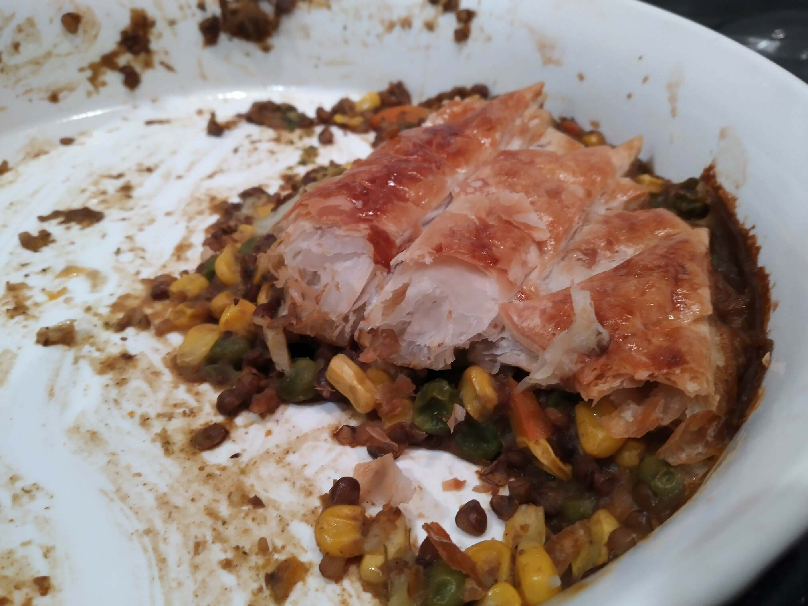

Vegetable Lentil Pie

1onion2 clovesgarlic
Saute onion and minced garlic in saucepan
somecurry powder
Add curry powder and cook until fragant
1 canlentils2 cupsfrozen vegetables
Add lentils and frozen vegetables
1 tspvegetable stock2 cupswater
Add vegetable stock and water and simmer
Grease casserole dish
Transfer pie contents to dish
2 sheetspastry
Cut pastry into strips
Arrange in a lattice formation over pie
1egg
Paint beaten egg on pastry
Cook until pastry is golden